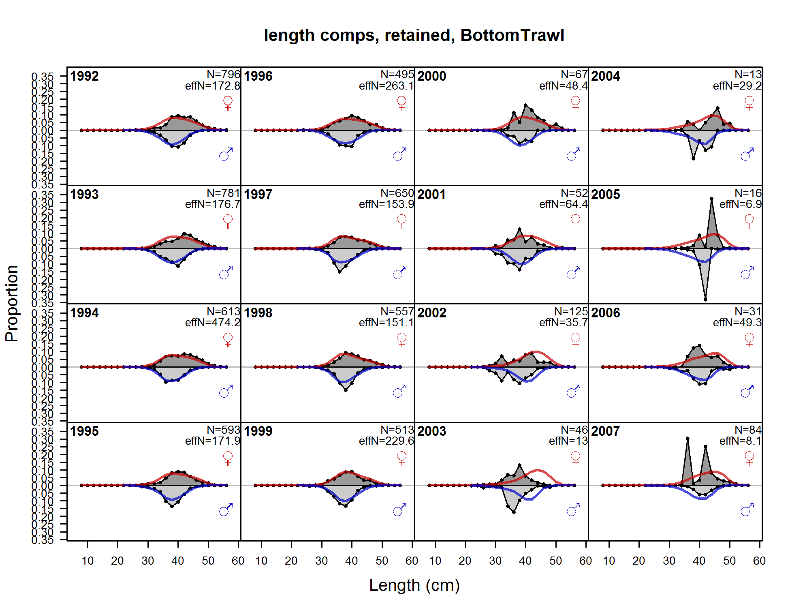
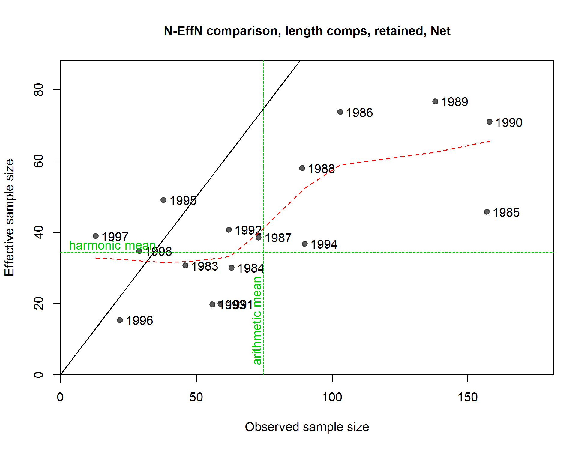

{kind=link}
{kind=link}
{kind=link}
{kind=link}
{kind=link}
{kind=link}
{kind=link}
{kind=link}
{kind=link}
{kind=link}
{kind=link}
{kind=link}
{kind=link}
{kind=link}
{kind=link}
{kind=link}
{kind=link}
{kind=link}

N-EffN comparison, length comps, retained, Hake
file: comp_lenfit_sampsize_flt3mkt2.png
length comps, retained, BottomTrawl (plot 1 of 3)
file: comp_lenfit_flt1mkt2_page1.png

length comps, retained, BottomTrawl (plot 2 of 3)
file: comp_lenfit_flt1mkt2_page2.png
length comps, retained, BottomTrawl (plot 3 of 3)
file: comp_lenfit_flt1mkt2_page3.png
Pearson residuals, retained, BottomTrawl (max=12.94) (plot 3 of 3)
Closed bubbles are positive residuals (observed > expected) and open bubbles are negative residuals (observed < expected).
file: comp_lenfit_residsflt1mkt2_page3.png
N-EffN comparison, length comps, retained, BottomTrawl
file: comp_lenfit_sampsize_flt1mkt2.png
Francis data weighting method TA1.8 BottomTrawl
Suggested sample size adjustment (with 95% interval) for len data from BottomTrawl:
0.081 (0.059-0.1293)
file: comp_lenfit_data_weighting_TA1.8_BottomTrawl.png
length comps, discard, BottomTrawl
file: comp_lenfit_flt1mkt1.png
Pearson residuals, discard, BottomTrawl (max=54.14)
Closed bubbles are positive residuals (observed > expected) and open bubbles are negative residuals (observed < expected).
file: comp_lenfit_residsflt1mkt1.png
N-EffN comparison, length comps, discard, BottomTrawl
file: comp_lenfit_sampsize_flt1mkt1.png
Francis data weighting method TA1.8 BottomTrawl
Suggested sample size adjustment (with 95% interval) for len data from BottomTrawl:
0.081 (0.0583-0.1338)
file: comp_lenfit_data_weighting_TA1.8_BottomTrawl.png
length comps, retained, MidwaterTrawl (plot 1 of 3)
file: comp_lenfit_flt2mkt2_page1.png
length comps, retained, MidwaterTrawl (plot 2 of 3)
file: comp_lenfit_flt2mkt2_page2.png
length comps, retained, MidwaterTrawl (plot 3 of 3)
file: comp_lenfit_flt2mkt2_page3.png
Pearson residuals, retained, MidwaterTrawl (max=14.18) (plot 3 of 3)
Closed bubbles are positive residuals (observed > expected) and open bubbles are negative residuals (observed < expected).
file: comp_lenfit_residsflt2mkt2_page3.png
N-EffN comparison, length comps, retained, MidwaterTrawl
file: comp_lenfit_sampsize_flt2mkt2.png
Francis data weighting method TA1.8 MidwaterTrawl
Suggested sample size adjustment (with 95% interval) for len data from MidwaterTrawl:
0.0497 (0.0307-0.1109)
file: comp_lenfit_data_weighting_TA1.8_MidwaterTrawl.png
length comps, retained, Hake (plot 1 of 2)
file: comp_lenfit_flt3mkt2_page1.png
length comps, retained, Hake (plot 2 of 2)
file: comp_lenfit_flt3mkt2_page2.png
Pearson residuals, retained, Hake (max=19.39) (plot 2 of 2)
Closed bubbles are positive residuals (observed > expected) and open bubbles are negative residuals (observed < expected).
file: comp_lenfit_residsflt3mkt2_page2.png
N-EffN comparison, length comps, retained, Hake
file: comp_lenfit_sampsize_flt3mkt2.png
Francis data weighting method TA1.8 Hake
Suggested sample size adjustment (with 95% interval) for len data from Hake:
0.029 (0.0209-0.0517)
file: comp_lenfit_data_weighting_TA1.8_Hake.png
length comps, retained, Net
file: comp_lenfit_flt4mkt2.png
Pearson residuals, retained, Net (max=16.84)
Closed bubbles are positive residuals (observed > expected) and open bubbles are negative residuals (observed < expected).
file: comp_lenfit_residsflt4mkt2.png

N-EffN comparison, length comps, retained, Net
file: comp_lenfit_sampsize_flt4mkt2.png
Francis data weighting method TA1.8 Net
Suggested sample size adjustment (with 95% interval) for len data from Net:
0.1218 (0.0762-0.306)
file: comp_lenfit_data_weighting_TA1.8_Net.png
length comps, retained, HnL (plot 1 of 2)
file: comp_lenfit_flt5mkt2_page1.png
length comps, retained, HnL (plot 2 of 2)
file: comp_lenfit_flt5mkt2_page2.png
Pearson residuals, retained, HnL (max=14.91) (plot 2 of 2)
Closed bubbles are positive residuals (observed > expected) and open bubbles are negative residuals (observed < expected).
file: comp_lenfit_residsflt5mkt2_page2.png
N-EffN comparison, length comps, retained, HnL
file: comp_lenfit_sampsize_flt5mkt2.png
Francis data weighting method TA1.8 HnL
Suggested sample size adjustment (with 95% interval) for len data from HnL:
0.2171 (0.1471-0.3877)
file: comp_lenfit_data_weighting_TA1.8_HnL.png
length comps, discard, HnL
file: comp_lenfit_flt5mkt1.png
Pearson residuals, discard, HnL (max=6.03)
Closed bubbles are positive residuals (observed > expected) and open bubbles are negative residuals (observed < expected).
file: comp_lenfit_residsflt5mkt1.png
N-EffN comparison, length comps, discard, HnL
file: comp_lenfit_sampsize_flt5mkt1.png
Francis data weighting method TA1.8 HnL
Suggested sample size adjustment (with 95% interval) for len data from HnL:
0.2171 (0.1524-0.3788)
file: comp_lenfit_data_weighting_TA1.8_HnL.png
length comps, whole catch, Triennial
file: comp_lenfit_flt7mkt0.png
Pearson residuals, whole catch, Triennial (max=21.76)
Closed bubbles are positive residuals (observed > expected) and open bubbles are negative residuals (observed < expected).
file: comp_lenfit_residsflt7mkt0.png
N-EffN comparison, length comps, whole catch, Triennial
file: comp_lenfit_sampsize_flt7mkt0.png
Francis data weighting method TA1.8 Triennial
Suggested sample size adjustment (with 95% interval) for len data from Triennial:
0.0951 (0.0582-0.4132)
file: comp_lenfit_data_weighting_TA1.8_Triennial.png
length comps, whole catch, NWFSC
file: comp_lenfit_flt8mkt0.png
Pearson residuals, whole catch, NWFSC (max=19.67)
Closed bubbles are positive residuals (observed > expected) and open bubbles are negative residuals (observed < expected).
file: comp_lenfit_residsflt8mkt0.png
N-EffN comparison, length comps, whole catch, NWFSC
file: comp_lenfit_sampsize_flt8mkt0.png

Francis data weighting method TA1.8 NWFSC
Suggested sample size adjustment (with 95% interval) for len data from NWFSC:
0.2464 (0.1352-1.1185)
file: comp_lenfit_data_weighting_TA1.8_NWFSC.png
length comps, retained, aggregated across time by fleet
file: comp_lenfit_mkt2_aggregated_across_time.png
length comps, discard, aggregated across time by fleet
file: comp_lenfit_mkt1_aggregated_across_time.png
length comps, whole catch, aggregated across time by fleet
file: comp_lenfit_mkt0_aggregated_across_time.png
Note: this plot doesn't seem to be working right for some models.
Pearson residuals, sexes combined, discard, comparing across fleets
Closed bubbles are positive residuals (observed > expected) and open bubbles are negative residuals (observed < expected).
file: comp_lenfit_sex1mkt1_multi-fleet_comparison.png
Note: this plot doesn't seem to be working right for some models.
Pearson residuals, female, retained, comparing across fleets (plot 1 of 2)
Closed bubbles are positive residuals (observed > expected) and open bubbles are negative residuals (observed < expected).
file: comp_lenfit_sex2mkt2_page1_multi-fleet_comparison.png
Note: this plot doesn't seem to be working right for some models.
Pearson residuals, female, retained, comparing across fleets (plot 2 of 2)
Closed bubbles are positive residuals (observed > expected) and open bubbles are negative residuals (observed < expected).
file: comp_lenfit_sex2mkt2_page2_multi-fleet_comparison.png
Note: this plot doesn't seem to be working right for some models.
Pearson residuals, female, discard, comparing across fleets
Closed bubbles are positive residuals (observed > expected) and open bubbles are negative residuals (observed < expected).
file: comp_lenfit_sex2mkt1_multi-fleet_comparison.png
Note: this plot doesn't seem to be working right for some models.
Pearson residuals, female, whole catch, comparing across fleets
Closed bubbles are positive residuals (observed > expected) and open bubbles are negative residuals (observed < expected).
file: comp_lenfit_sex2mkt0_multi-fleet_comparison.png
Note: this plot doesn't seem to be working right for some models.
Pearson residuals, male, retained, comparing across fleets (plot 1 of 2)
Closed bubbles are positive residuals (observed > expected) and open bubbles are negative residuals (observed < expected).
file: comp_lenfit_sex3mkt2_page1_multi-fleet_comparison.png
Note: this plot doesn't seem to be working right for some models.
Pearson residuals, male, retained, comparing across fleets (plot 2 of 2)
Closed bubbles are positive residuals (observed > expected) and open bubbles are negative residuals (observed < expected).
file: comp_lenfit_sex3mkt2_page2_multi-fleet_comparison.png
Note: this plot doesn't seem to be working right for some models.
Pearson residuals, male, discard, comparing across fleets
Closed bubbles are positive residuals (observed > expected) and open bubbles are negative residuals (observed < expected).
file: comp_lenfit_sex3mkt1_multi-fleet_comparison.png
Note: this plot doesn't seem to be working right for some models.
Pearson residuals, male, whole catch, comparing across fleets
Closed bubbles are positive residuals (observed > expected) and open bubbles are negative residuals (observed < expected).
file: comp_lenfit_sex3mkt0_multi-fleet_comparison.png
{kind=link}
{kind=link}
{kind=link}
{kind=link}
{kind=link}
{kind=link}
{kind=link}
{kind=link}
{kind=link}
{kind=link}
{kind=link}
{kind=link}
{kind=link}
{kind=link}
{kind=link}
{kind=link}
{kind=link}
{kind=link}
{kind=link}
{kind=link}
{kind=link}
{kind=link}
{kind=link}
{kind=link}
{kind=link}
{kind=link}
{kind=link}
{kind=link}
{kind=link}
{kind=link}
{kind=link}
{kind=link}